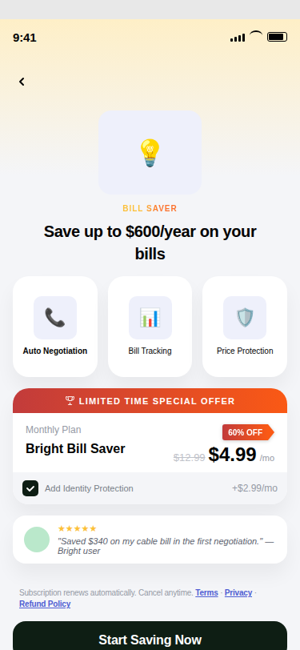

Owned the free tier for users who cancelled, from 3.0 through 4.0: what they still see, what is locked, and where the upgrade prompts sit.
At Bright, a "Basic" user is someone who cancelled their subscription. Zero dollars. Gone. But not gone from the app. These users still have it installed, still open it. The question is whether the product can do something with that.
Most of these users have poor credit scores. That means they're the right audience for cash advance offers through Bright's affiliate programme. Every offer taken generates revenue without the user paying Bright directly. The other path: give them just enough value that some of them re-subscribe.
Freemium is the layer that sits on top of the Basic experience. It controls what these users see, what's locked, what's pitched, and what's offered. I owned it from version 3.0 through 4.0.

Two new pitches for Basic users: Rent Reporting and Sub Management. Both are standalone value propositions strong enough to generate opt-ins on their own. The idea: don't just tell churned users what they're missing. Give them something specific to act on.
The Credit Tab also changed. Instead of a dummy score, 3.0 showed actual data in the rent screens. Real information, not a preview. Basic users could now see genuine value in one tab, which made the locked tabs harder to ignore.
The design problem: how much do you give away before the upgrade loses its pull? Too little and users leave. Too much and they never pay.
Mid-handoff, the APM requested a copy change on the disclosure modal. I pushed back. Disclosure copy is compliance-adjacent. It needs review from the PM who owns product copy, not the APM pushing for a faster ship.
This was uncomfortable. I was pushing back on the same person I needed sign-off from. But the right reviewer is the right reviewer regardless of who's asking. I escalated it to the Design Director. He agreed. The PM reviewed the copy before it went out.
A disclosure modal is not the place to move fast and fix later.
The APM requested green CTAs on the survey screens. The Design Director's stated standard for in-app buttons is black. Engineering flagged that switching to black would cost bandwidth they didn't have.
Two options. Implement green quietly and move on. Or document the decision.
I documented it. In writing, on the channel, CC'd the Design Director. The green implementation shipped as a bandwidth concession. Not a design decision. When Engineering rolls out the black CTA standard across the app, this screen is already on the list.
The difference between "we shipped green" and "we shipped green because of X, documented on Y, scheduled to change on Z" is the difference between a designer who executes and one who owns.
Shreyo Debnath · Product Designer